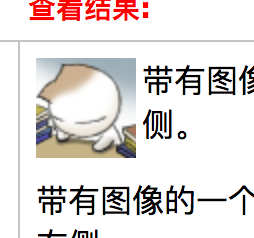

人们一开始只是想用一个支持 :hover 的 button，于是找到了 IE6 下唯一支持 :hover 的 a 标签来代替。（第一次让步）。可是 a 标签的 href 属性为空时 IE6 还是不支持 :hover，那就填充 href 属性（第二次让步）填充什么呢？#，这个会引起页面滚动到顶端，会增加无用的历史记录，会让 url 里有个难看的 #，这不完美。#!，##，###，页面不会滚动了，但还是有 # 的其他两个问题，这个也不完美。javascript:;，javascript:void(0); 这些没有 # 系列的问题了，但是会让 IE6 的动态 GIF 停止播放，这也不完美（第三次让步）。事件绑定模式下的 return false，事件监听模式下的 event.preventDefault() 和 event.returnValue = false， 点击 a 标签时，浏览器就无视 href 属性了。如果 IE6 :hover 支持的好，哪有这一堆破事儿。
作者：任文龙
来源：知乎
著作权归作者所有。商业转载请联系作者获得授权，非商业转载请注明出处。